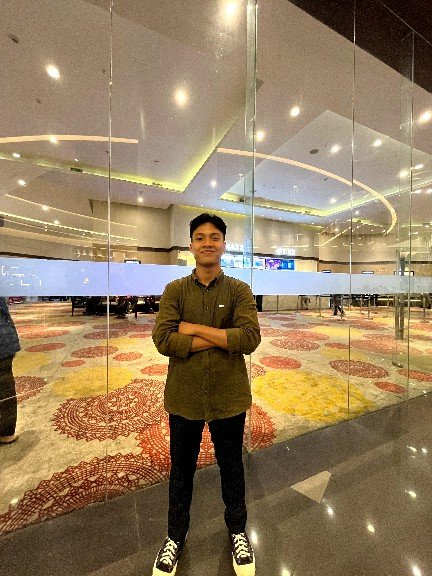

Profile saya
Mahasiswa Sistem Informasi dengan minat pada teknologi, aerospace, dan defense technology.

| Nama | Bagus Ahlik |
|---|---|
| Kelas | 3E |
| Program studi | Sistem Informasi |
| Fakultas | Sains dan Teknologi |
| Universitas | Universitas Islam Negeri Sultan Syarif Kasim Riau |
| Asal | Indragiri Hulu |
Halo! Nama saya Bagus Ahlik. Saya mahasiswa Sistem Informasi di Universitas Islam Negeri Sultan Syarif Kasim Riau. Saya lahir dan tumbuh di Indragiri Hulu, sebuah daerah yang kaya akan budaya dan alam yang indah.
Saya ingin menjadi seorang Aspiring Software Engineer yang memiliki minat besar dalam dunia teknologi dan pengembangan perangkat lunak. Saya sangat antusias mempelajari berbagai dasar pemrograman, pengembangan web, serta memahami bagaimana teknologi dapat digunakan untuk menciptakan solusi yang bermanfaat. Ketertarikan saya tidak hanya pada coding, tetapi juga pada proses berpikir logis, pemecahan masalah, dan inovasi di bidang digital.
Selain itu, saya juga memiliki ketertarikan khusus pada dunia Defense Technology, yaitu teknologi yang berkaitan dengan keamanan, sistem pertahanan, dan perkembangan teknologi modern yang digunakan dalam bidang strategis. Saya sangat tertarik pada bagaimana teknologi dapat diterapkan dalam sistem pertahanan, komunikasi, kecerdasan buatan, hingga pengembangan perangkat lunak yang mendukung efisiensi dan keamanan.
Ketertarikan saya semakin berkembang pada bidang Aerospace dan teknologi persenjataan militer. Saya tertarik mempelajari bagaimana sistem navigasi, radar, avionik, kontrol penerbangan, serta teknologi modern digunakan dalam industri kedirgantaraan dan pertahanan. Dunia aerospace menunjukkan bagaimana teknologi, rekayasa, dan inovasi dapat bekerja bersama untuk menciptakan sistem yang presisi, kompleks, dan memiliki tingkat keamanan tinggi.
Saya juga memiliki ketertarikan besar terhadap kendaraan tempur dan alutsista modern, terutama tank, combat aircraft, dan kapal induk. Saya menyukai bagaimana teknologi canggih diterapkan pada kendaraan militer, mulai dari sistem persenjataan, perlindungan, radar, hingga kemampuan operasional yang kompleks. Ketertarikan ini membuat saya semakin ingin memahami hubungan antara teknologi, rekayasa, dan strategi dalam dunia pertahanan modern.
Saat ini saya ingin mempelajari lebih dalam lagi tentang Web Development, Computational Fluid Dynamics (CFD), Data Science, dan dasar-dasar pemrograman untuk membangun fondasi yang kuat sebagai calon software engineer. Saya percaya bahwa proses belajar yang konsisten, rasa ingin tahu yang tinggi, dan semangat untuk terus berkembang adalah kunci untuk mencapai tujuan di dunia teknologi. Dengan menggabungkan minat pada software engineering, defense technology, aerospace, dan teknologi militer, saya berharap dapat berkontribusi dalam menciptakan inovasi teknologi yang berdampak di masa depan.
Saya memiliki ketertarikan besar terhadap dunia aerodinamika, pesawat tempur, sistem persenjataan pesawat, tank, teknologi radar, serta aerospace. Ketertarikan tersebut membuat saya sering mencari informasi, memahami cara kerja teknologi, dan mempelajari bagaimana sistem modern dikembangkan dalam industri pertahanan dan kedirgantaraan.
Di luar akademik, saya adalah pribadi yang cenderung pendiam ketika belum mengenal seseorang, namun memiliki rasa ingin tahu yang tinggi terhadap hal-hal yang saya minati. Saya senang mengeksplorasi pengetahuan baru dan percaya bahwa setiap pengalaman merupakan pelajaran berharga yang dapat membantu saya berkembang, baik secara pribadi maupun profesional.
Fun fact tentang saya adalah saya lebih sering menghabiskan waktu dengan membaca buku, artikel, atau sumber informasi yang membahas teknologi pertahanan dan aerospace. Dari kebiasaan tersebut, saya tidak hanya menikmati proses belajar, tetapi juga termotivasi untuk memahami lebih dalam mengenai teknologi yang saya sukai dan bagaimana teknologi tersebut berkembang di masa depan.